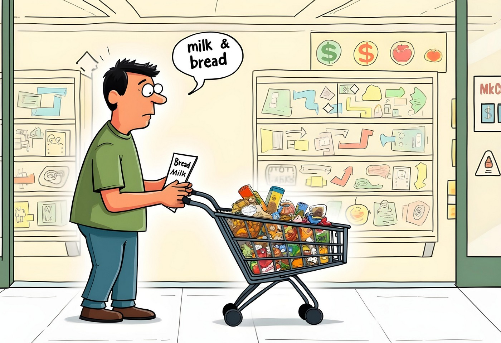
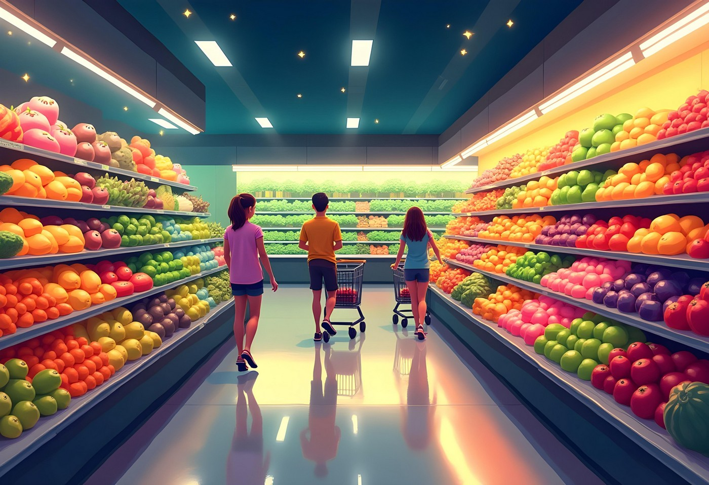
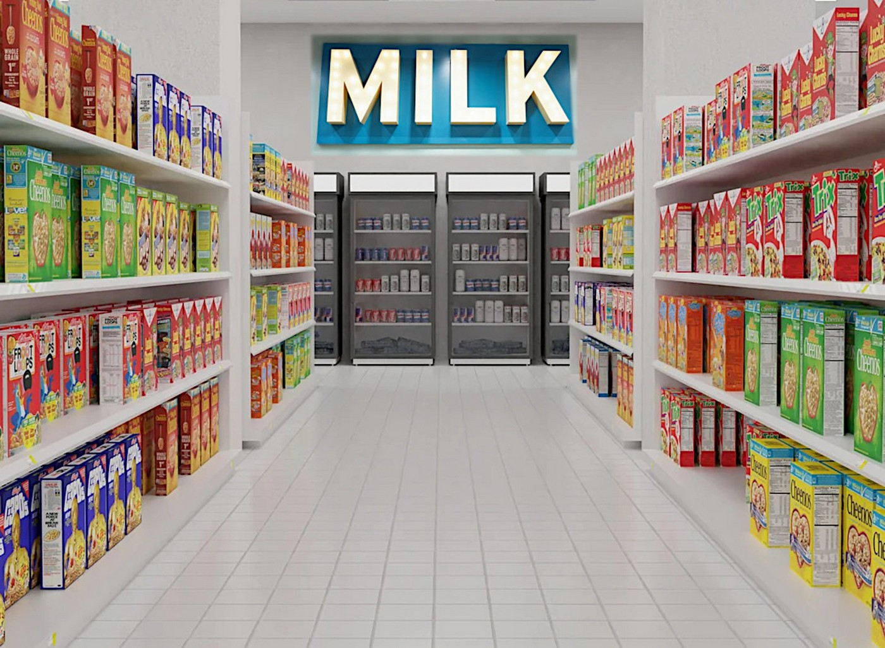
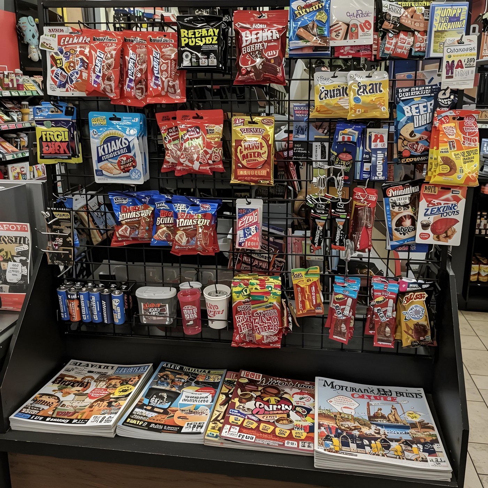
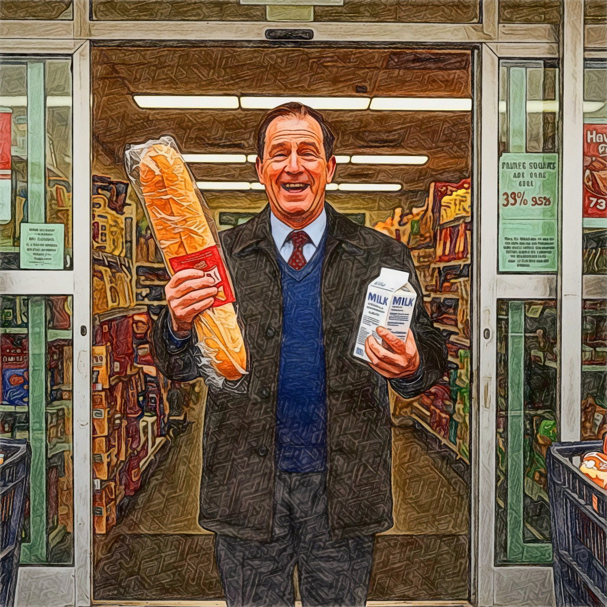

The Secret of Grocery Store Layouts

Grocery Store Secrets
Have you ever gone to the grocery store for just milk and bread, but came out with a full shopping cart? This is no accident. Grocery stores have clever tricks in how they arrange their layouts, which are designed like a map that guides you to spend more money. From the moment you enter until you reach the checkout counter, every aspect of the store's design has been carefully planned to influence your spending behavior.
A Cheerful Welcome

When you first walk into a grocery store, you usually see fruits and vegetables right away. All those bright colors and fresh smells makes the whole store seem fresh and alive. It puts you in a good mood, and when you feel good at the start of your shopping experience, you're likely to buy more things later.
The Long Walk to the Basics

As you continue your journey, you'll notice that essential items like milk, bread, and eggs are usually located at the back of the store. Everyone needs these staples, so shoppers must pass by countless other shelves of products as they make their way to the back. You'll also notice the special displays at the end of the aisles which have sale items or seasonal products designed to catch your attention. Meanwhile, the store's most profitable items are placed at eye level, while cheaper products are often placed on higher or lower shelves where they're less likely to be noticed.
The Final Trap: Checkout

Before you leave, you have to go through the checkout area. This is where stores play their last trick. This zone is filled with small, impulse-purchase items like snacks, magazines, and batteries – things you probably didn't plan to buy but might grab while waiting in line. You might think, "It's just a dollar or two," and add it to your cart. Even the music they play and how wide the aisles are have been carefully planned to make you shop longer and buy more. Nothing in a grocery store is random – everything has a purpose.
Shopping Smarter

Understanding the secret of grocery store layouts can help you become a more conscious shopper. By recognizing these psychological tactics, you can stick to your budget and shopping list more effectively. Next time you go shopping, try to spot these tricks. Notice how the store tries to make you buy things you didn't plan to get. Being aware of these techniques can put you back in control of your shopping experience.